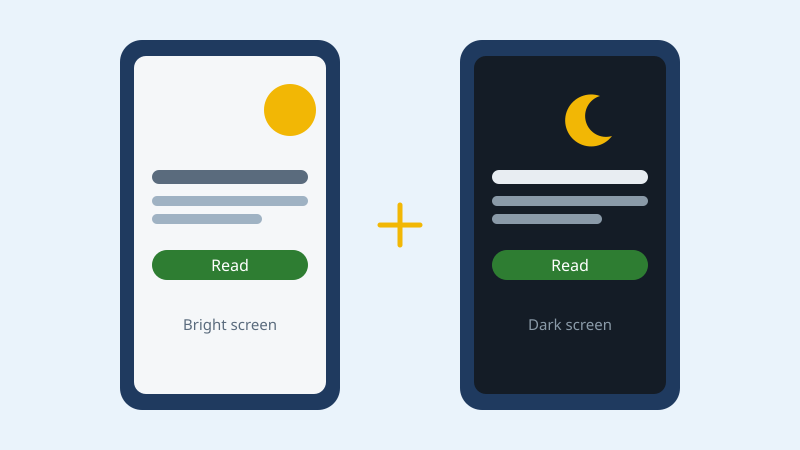

How to Turn On Dark Mode on Your Samsung Galaxy
Hassan is 69 years old. Every night, after dinner, he sits in his favourite chair and reads the news on his phone. His wife goes to bed at ten, and the room is dark and quiet. But his phone is not quiet. The screen glows bright white, like a small lamp, and the light hurts his eyes and lights up the whole room. Some nights his eyes feel tired after only a few minutes, and he puts the phone down, even though he still wants to read.
There is a simple fix, and it is already on his phone. It is called Dark Mode. When you switch it on, the bright white screen turns dark, with light-coloured words on a dark background. The words are just as easy to read — many people find them easier — but the screen no longer glows like a lamp. It is gentle on tired eyes, it does not light up a dark room, and on most Galaxy phones it even helps the battery last a little longer. This guide shows you how to switch it on, add a quick button for it, make it switch itself on every night, and switch it off again.

What Dark Mode is, in plain words
Think of your phone screen as a piece of paper. In the daytime, the paper is white, and the words on it are dark. That is how your phone normally looks: a white screen with dark words. In daylight it is easy to read.
Dark Mode turns that paper over. The screen becomes dark — dark grey, or nearly black — and the words become white, or light grey. Nothing else changes. Your apps are still in the same places, your messages are still there, and your photos look the same. Only the colours change.
It does not change anything permanently. It is a setting you can switch on and off whenever you like, like switching a lamp on and off. Many people switch it on in the evening and off in the morning. This guide shows you both ways: switching it on by hand, and making the phone switch it on by itself every evening.
Before you start — two quick checks
Do these two things before you begin. They take one minute.
- Know that daytime is the wrong time to judge it. Dark Mode is most useful in the evening and at night, when the room is dark. If you are setting it up in the middle of the day, the screen will still turn dark, and it may look strange in bright sunlight. Do not worry — that is normal. You can switch it straight back off again, and set it to come on by itself in the evening, as shown in Step 3.
- Know how to open Settings. Look for the app with the gear symbol, usually called "Settings". If you cannot find it, swipe up from the bottom of the home screen to see all your apps, and look for the gear symbol there. Most of this guide happens in Settings, so it helps to know where it is. Read How to Make the Text on Your Galaxy Bigger and Easier to Read if the words on the screen are hard to read.
Now you are ready. The first step takes less than a minute.
Step 1: Switch Dark Mode on in Settings
This is the main switch. It lives in the Display settings, where the phone keeps all the choices about how the screen looks.
- Open Settings. Tap the app with the gear symbol, usually called "Settings".
- Find "Display". Scroll down the Settings list until you see "Display", and tap it. This is where the phone keeps the choices about brightness, text size, and colours.
- Look for "Light" and "Dark" at the top. Near the top of the Display screen, you should see two choices, usually shown as two small pictures of a phone: one bright, marked "Light", and one dark, marked "Dark". If you cannot see them, tap the search box at the top of Settings, type "Dark mode", and tap the result. The search box is the quickest way, and it works on every Galaxy phone.
- Tap "Dark". Tap the dark picture, or the word "Dark". Straight away, the whole screen will change: white turns dark, and dark words turn light. That is Dark Mode, switched on.
- Look around. Go back to the home screen and open an app or two. Your messages, contacts, and photos should all be dark now, with light words. If an app still looks bright white, do not worry — some apps have their own switch, and Step 5 shows you how to deal with those.
That is it. Dark Mode is on. If you only want it at night, the next steps show you the quick button and the automatic evening switch.
Step 2: Add the quick Dark Mode button to the top of your screen
Going into Settings every evening is slow. It is much easier to have a button you can tap in two seconds. That button lives at the top of your screen, in the panel you see when you swipe down. Here is how to find it, and add it if it is not there.
- Swipe down from the top of the screen, twice. Put your finger at the very top edge of the screen and swipe down. You will see a row of round buttons — Wi-Fi, sound, torch, and others. Swipe down a second time to see the full panel.
- Look for the "Dark mode" button. Look through the buttons for one called "Dark mode". It often has a small moon picture on it. If you can see it, tap it once. The screen will turn dark. Tap it again, and it will go bright again. That is your quick switch, and you can use it any time.
- If you cannot see it, add it. Look for a small pencil symbol, a plus sign, or three small dots — the word for this is "Edit". Tap it. You will see a list of more buttons that are not on your panel yet. Find "Dark mode" in that list, press on it and drag it up into your panel, or tap it to add it. Then tap "Done", or the back arrow, to save it.
- Try it. Swipe down from the top twice again, find the "Dark mode" button, and tap it. The screen should turn dark. Tap it again, and it should go bright. Now you have a two-second switch.
If the button is hard to find, ask a family member to help you the first time. Once it is on your panel, you will never need to add it again, and tapping it becomes as easy as tapping the torch.
Step 3: Make Dark Mode switch on by itself every night
This is the clever part. You can tell the phone to switch Dark Mode on every evening, and off every morning, all by itself. You set it once, and then you never have to think about it again.
- Open Settings and go to Display. Open Settings, tap "Display", just as in Step 1.
- Tap "Dark", then look for "Dark mode settings". If Dark Mode is not on already, tap "Dark" first. Then look for a line that says "Dark mode settings", and tap it. If you cannot find it, use the search box at the top of Settings and type "Dark mode settings".
- Switch on "Turn on as scheduled". You should see a switch marked "Turn on as scheduled", or words like "Schedule". Tap it so it turns on. Two choices should appear underneath.
- Choose when it comes on. The first choice is usually "Sunset to sunrise". The phone looks at the time of sunset and sunrise where you live, and switches Dark Mode on when the sun goes down, and off when the sun comes up. This is the easiest choice, and the one most people pick, because you never have to set a time. Tap it if you see it.
- Or choose your own times. The second choice is usually called "Custom schedule". Tap it if you want to pick the times yourself — for example, on at 8 in the evening, and off at 7 in the morning. Tap the start time, choose the hour, then tap the end time. The phone will follow your times every day.
That is the setup done. From tonight, Dark Mode will switch itself on in the evening, and off in the morning. You can still use the quick button from Step 2 any time. The schedule will carry on as normal the next evening.
Step 4: Switch Dark Mode off again
There are three ways, and they all work.
- Use the quick button. Swipe down from the top of the screen twice, find the "Dark mode" button, and tap it. The screen goes bright again. This is the easiest way.
- Use Settings. Open Settings, tap "Display", and tap "Light". The screen goes bright again.
- Wait for the morning. If you set the schedule in Step 3, Dark Mode will switch itself off in the morning, at sunrise or at the time you chose.
Switching it off does not switch the schedule off. If you set the schedule in Step 3, Dark Mode will still come on again in the evening. To stop the schedule, go back to "Dark mode settings" and switch off "Turn on as scheduled". Then Dark Mode will only change when you change it by hand.
Step 5: Dark Mode inside your apps
Most apps on your Galaxy follow the phone. When Dark Mode is on, they turn dark. When it is off, they turn bright. But a few apps have their own switch, and they do not always follow the phone. Here are the ones people ask about most.
- WhatsApp. WhatsApp usually follows the phone, but it also has its own choice. Open WhatsApp, tap the three dots in the top corner, tap "Settings", then tap "Chats", then look for "Theme". Choose "System default" if you want WhatsApp to follow the phone, or "Dark" if you want WhatsApp dark all the time, even when the phone is bright.
- The internet browser. If you use the Samsung Internet browser, it usually follows the phone too. If a web page still looks bright white, look for a small moon symbol, or a menu choice called "Dark mode", inside the browser's own menu. Some web pages are built to stay bright, and the browser cannot always change them. That is the page, not your phone.
- Other apps. Most apps from Google, and most apps on the Play Store, follow the phone without you doing anything. If one app stays bright, open that app, look in its own settings for a choice called "Theme", "Appearance", or "Dark mode", and choose "Dark", or "System default". If the app has no such choice, it simply does not have Dark Mode, and it will stay bright. Nothing is wrong with your phone.
Do not try to fix every app in one sitting. Set the phone first, as in Steps 1 to 3, and use it for a day or two. Then, if one app still bothers you at night, look for its own switch.
Dark Mode at night, in the car, and when you are reading
Dark Mode is most useful in the moments when the room is dark and the phone is bright. Here are the everyday moments when it helps most.
- Reading the news in bed. The screen no longer glows like a lamp, so it does not wake the person next to you, and it does not hurt your eyes when the room is dark. Keep the brightness low as well, and reading in bed becomes comfortable.
- Checking a message in the middle of the night. When the phone wakes you, a bright white screen can feel like someone switched the lights on. With Dark Mode, the screen stays gentle, and it is easier to go back to sleep afterwards.
- Looking at the phone in the car at night. A bright screen in a dark car is distracting for the driver, and tiring for a passenger. Dark Mode keeps the screen calm. Never use the phone while driving — but as a passenger, a dark screen is much kinder.
- Reading for a long time. Some people find light words on a dark background easier on the eyes when they read for a long while, especially in the evening. If your eyes feel tired after reading, try Dark Mode for a few evenings and see how it feels.
In the daytime, in bright sunlight, the bright screen is often easier to read. That is why the schedule in Step 3 is so useful: bright in the day, dark in the evening, without you having to remember.
Dark Mode and your battery
Most Galaxy phones light up each tiny dot on the screen on its own. On a bright white screen, every dot is lit, and that uses battery. On a dark screen, most of the dots are switched off, and that uses less battery.
That means Dark Mode can help your battery last a little longer, especially if you spend a lot of time looking at the screen. It will not double your battery life — the saving is small, usually a few percent over a day — but it is real, and it costs you nothing.
Do not switch Dark Mode on only for the battery. Switch it on because it is kinder to your eyes at night, and take the small battery saving as a bonus. If your battery runs down quickly for other reasons, read How to Make Your Galaxy Battery Last Longer.
Practise with Hassan
Let us practise with Hassan. It is nine o'clock in the evening. The room is dark, and his wife is already asleep. Hassan wants to read the news, but the bright screen hurts his eyes. He opens Settings, taps "Display", and taps "Dark". The screen turns dark at once, and the words are white. He reads the news, and his eyes feel fine.
The next evening, he does not even open Settings. He swipes down from the top of the screen twice, taps the "Dark mode" button with the small moon on it, and the screen turns dark. And the evening after that, he does not even tap the button: he set the schedule, so the phone turns Dark Mode on by itself at sunset, and off again in the morning.
Now try it yourself. Open Settings, tap "Display", and tap "Dark". Look at your home screen, and open your messages. If you like it, leave it on. If you do not, tap "Light" and it goes back. Practise switching it on and off three or four times, until it feels easy. Then add the quick button from Step 2, set the schedule in Step 3, and let the phone do it for you.
Common mistakes
- Looking for Dark Mode under the wrong menu. Dark Mode lives under "Display", not under "Wallpaper" or "Themes". If you cannot find it, use the search box at the top of Settings and type "Dark mode".
- Thinking the phone is broken when the screen turns dark. The first time the screen turns dark, it can look alarming, as if something has gone wrong. It has not. Tap the quick button again, or go to Settings, tap "Display", and tap "Light".
- Forgetting the schedule is on. If the screen turns dark every evening by itself, and you did not expect it, the schedule from Step 3 is switched on. That is the phone doing what you asked it to do. To stop it, go to "Dark mode settings" and switch off "Turn on as scheduled".
- Trying to change every app at once. Most apps follow the phone by themselves. If one app stays bright, leave it for now and look for its own switch later. Trying to fix every app in one sitting is tiring, and most of them will already be dark.
- Using Dark Mode in bright sunlight and thinking it is hard to read. In bright daylight, a dark screen can be harder to read than a bright one. That is normal. Use the schedule so the phone is bright in the day and dark in the evening, or tap the quick button when you go outside.
- Turning the brightness right up to make the dark screen brighter. A dark screen with the brightness turned right up is still tiring on the eyes, and it uses more battery. Keep the brightness low in the evening, and let the dark colours do the work.
- Confusing Dark Mode with the blue light filter. Dark Mode changes the colours to dark. The blue light filter, sometimes called "Eye comfort shield", changes the colours to warm and yellowish. They are different settings, and you can use both together. The blue light filter lives under "Display" too.
- Thinking Dark Mode changes your photos. It does not. Your photos look exactly the same in the Gallery, dark or bright. Dark Mode only changes the menus and the words around your photos — never the photos themselves.
Frequently asked questions
Does Dark Mode change anything on my phone permanently?
No. It only changes the colours of the screen. Your apps, photos, messages, and settings are all exactly the same. When you switch it off, the screen goes back to bright. You can switch it on and off as often as you like.
Why is one app still bright when everything else is dark?
That app has its own switch, or it does not have Dark Mode at all. Open the app, look in its settings for "Theme", "Appearance", or "Dark mode", and choose "Dark", or "System default". If the app has no such choice, it will stay bright, and nothing is wrong with your phone.
Will Dark Mode help me sleep better?
It can help a little, because a dark screen is less bright and less tiring on the eyes at night. But the best help for sleep is to put the phone down half an hour before bed. Dark Mode is a comfort, not a treatment. If you often struggle to sleep, speak to your doctor.
Does Dark Mode use less battery?
A little, yes. On most Galaxy phones, a dark screen uses less battery than a bright white one, because most of the tiny dots on the screen are switched off. The saving is small — a few percent over a day. It is a bonus, not the main reason to use Dark Mode.
Can I make Dark Mode come on only at night?
Yes. That is exactly what Step 3 shows you. Open Settings, tap "Display", tap "Dark mode settings", switch on "Turn on as scheduled", and choose "Sunset to sunrise", or set your own times. The phone will then do it by itself, every day.
Will Dark Mode make my photos look different?
No. Your photos look the same. Dark Mode changes the menus and backgrounds around your photos, but the photos themselves are not changed at all.
Is Dark Mode the same as the blue light filter?
No. Dark Mode turns the screen dark with light words. The blue light filter, sometimes called "Eye comfort shield", keeps the screen bright but changes the colours to warm and yellowish. They are different settings, they live in the same place under "Display", and you can use both together.
If the words on your screen look different
Menu words may look a little different on your phone. That is normal. Samsung makes many Galaxy models — A-series and S-series — and they do not all show the exact same words. Your phone company, called a carrier, can also change some words, and so can your country or region. And your One UI version matters. In November 2026, some phones use One UI 8, some use One UI 8.5, and some use One UI 9. That is why this guide tells you to look for "Display", "Dark mode", and "Turn on as scheduled", instead of one fixed set of words.
If you cannot find "Dark mode" at all, open Settings, tap the search box at the top, and type "Dark mode". The search box will find it, whatever menu it sits under. And if the search finds nothing, your phone may be an older model where the feature is called something slightly different — ask a family member to look with you, or check that your phone is up to date.